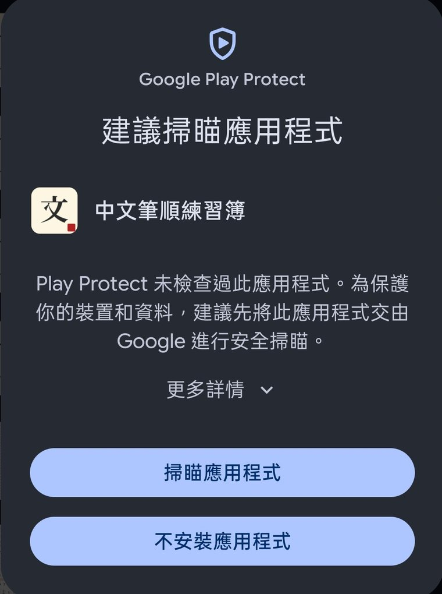
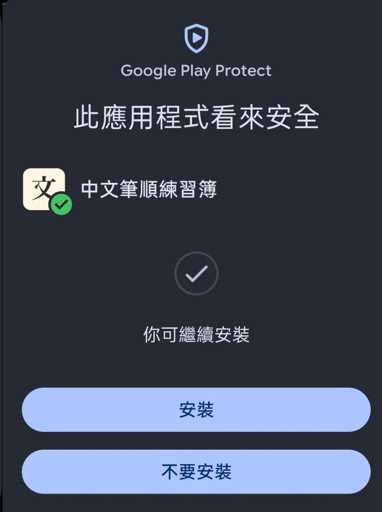

Android 安裝
APK 直接下載，不需要 Google Play 帳號。由於不是經 Play Store 安裝，系統會先詢問是否掃描應用程式 —— 這是正常的保護程序，按以下兩張圖操作即可完成安裝。
一、下載 APK
共享資料夾內同時存放歷來所有版本（v2.0 起），可自行選擇版本下載。
下載很慢或停滯？多數是 Google Drive 對大檔案的流量限制，不是你的網絡或本站問題。可以：① 重新按「直接下載 APK」；② 改為開啟共享資料夾，在檔案上按右鍵選「下載」；③ 先改用網頁版，稍後再下載。
二、系統提示「建議掃描應用程式」
下載完成後開啟檔案，Android 會提示此應用程式未經 Play Protect 檢查。按 「掃描應用程式」，讓系統檢查一次（通常數秒）。


三、掃描完成後按「安裝」
掃描結果顯示 「此應用程式看來安全」，按 「安裝」 即可。安裝完成後在桌面開啟「中文筆順練習簿」，無需登入，可完全離線使用。
四、若系統仍阻擋安裝
- 開啟「設定」→「安全性」（部分手機在「應用程式」內）
- 選擇「安裝不明應用程式」／「特殊應用程式存取權」
- 在清單中選擇你用來開啟 APK 的程式（例如 Chrome 或「檔案」）
- 開啟「允許此來源安裝應用程式」，然後重新開啟 APK
為何會出現警告？Google Play Protect 只會自動檢查來自 Play Store 的應用程式；經 APK 安裝的應用程式一律先提示掃描，屬正常設計，不代表應用程式有問題。本站 APK 只包含練習簿本身的離線網頁與字形資料，不要求任何權限（網絡、相機、位置、聯絡人皆不需要）。
版本：v2.36（build 40）· 與網頁版字形及筆順資料同步 · 每次更新會同時在共享資料夾加入新檔。